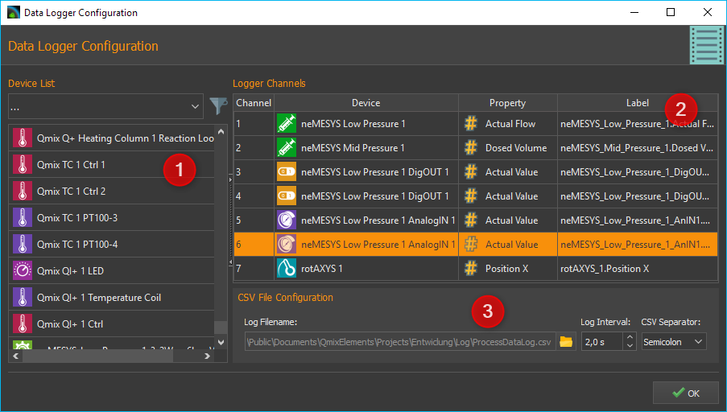
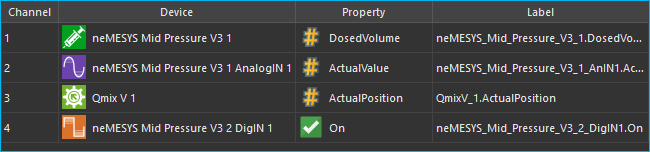
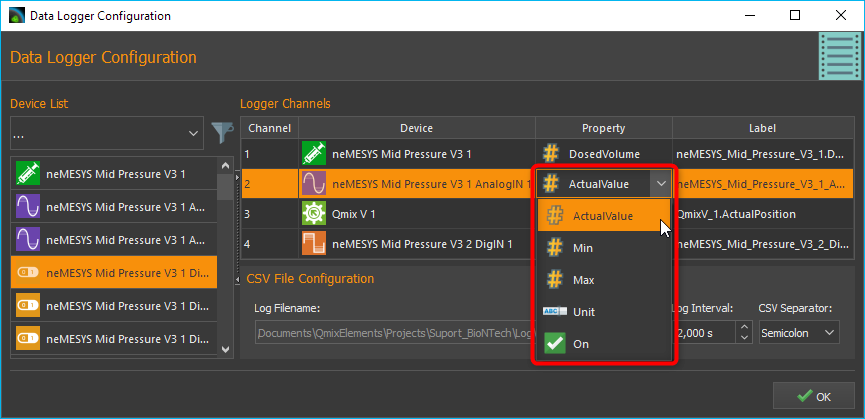
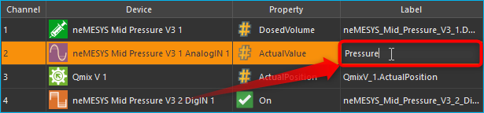
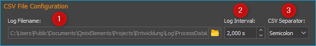
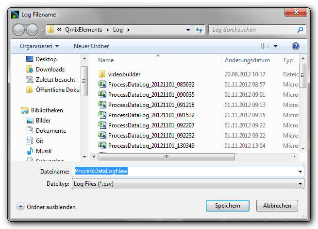
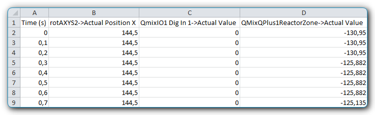
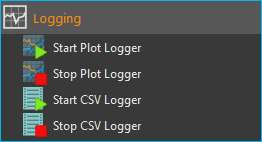

18. CSV Data Logger Plugin
18.1. Introduction
The data logger plug-in provides the user with a powerful tool to record any of the data provided by connected devices in a user-defined time interval. Data are written into a CSV file (CSV: comma/character-separated values). This text file format is commonly used to save and exchange simply-structured data.
Tip
CSV files can be opened and worked with in spreadsheet applications, such as Microsoft Excel if the correct value-separating and decimal sign has been used.
18.2. Configuration Dialogue
18.2.1. Open the Configuration Dialogue
When the data logging plug-in has been loaded, the toolbar will display two additional buttons for the configuration of the logging of data ❶ and to start/stop the logging process ❷.
18.2.2. Overview Data Logger Plug-in
Once the data logging configuration has been activated, the following configuration dialogue will be displayed:

The configuration dialogue contains the following elements:
Device List – displays all devices or modules that provided recordable data. The filter selector above is to limit the list to specific device types, e.g. valves.
Logger Channels – lists all channels that may be recorded by the logger.
CSV File Configuration – allows the user to set various settings for the data logging file.
18.2.3. Overview Table Logger-Channels

The table Logger Channels shows the configuration of the process data logger. Each row in that table corresponds to one column in the recorded csv file. The following columns may be recorded:
Channel – shows the channel number of the corresponding channel.
Device – contains the device name for which the data will be recorded and its device icon.
Property – this is the name of the device property/process data value that will be recorded. Its type (numeric or boolean) can be identified by the displayed icon.

Numeric value

Boolean value

Text value
Label – allows you to define a customized description for the selected channel. This description will be used as the column header in the csv file.
In order to add a channel to the data logging process, simply follow the steps below.
18.3. Logger Configuration
18.3.1. Step 1- Adding of Channels
Drag-and-Drop the device for which you want to log the data from the Device List into the Logger Channels list. The new channel will be inserted into the list at the desired position (see figure below).

Tip
To simplify the device selection, the device list can be filtered according to device type.
18.3.2. Step 2- Select Device Property
In the Logger Channels list you now need to select the Property of the device that you want to record. For this, double-click into the respective filed within the column Property and select the device property from the opening list (see figure below).

18.3.3. Step 3 – Channel Description
In the column Label you can customize the description for each channel. This label will be used as the column header of the csv file for the selected channel.

To do this, double-click into the respective table cell that is to be changed and insert the new description (see figure above).
Important
Upon choosing a new device property, a new channel description will be assigned automatically. That is, you should change the channel label only once the correct device property has been selected.
18.3.4. Deleting Channels
Highlight the desired channels using the mouse to delete one or more channels from the list, and then use either the Delete key or the item of the right-click context menu:


To delete the entire channel list, use the context menu item .
18.3.5. Step 4 – Configuration of CSV Properties
In the CSV File Configuration section you can set the global properties of the CSV logger as well as the format of the recorded data (see figure below).

Select File Name and Folder
Set the file name and location of the log file via Log Filename ❶. For this, click on the folder symbol on the right, select the target folder and give a file name.

Setting the Recording Interval
Set the time interval at which the data of all channels is to be recorded via the field Log Interval ❷. The time unit for the interval is seconds and you may set it in 0.1 second increments.
Important
Choose the recording interval as large as possible and as small as necessary. This will minimize amount of data that will be recorded.
Set the Separating Character
The character that will be used to separate individual data (columns) needs to be set via the selection field CSV Separator ❸. Depending on the software that is to be used for data evaluation, the character that needs to be used may change.
Tip
To obtain a CSV file that can be imported into Microsoft Excel, the semicolon (;) should be used.
Important
All configuration settings of the process data logger will be saved upon closing the configuration dialogue and are available when the application will be restarted.
18.4. Start/Stop of the Logging Process
{kind=link}
Use the relevant toolbar button to start and stop the data logging process.
A new data file will be created each time the logging process is
started. A time stamp with date and time will be added as a suffix to
file name _YYYYMMDD_hhmmss. That means, if the file name
ProcessDataLog.csv has been assigned by the user, starting the logging
process on November 05, 2012 at 10:32 am and 9 secondswill create a
logging file with the name ProcessDataLog_20121105_103209.csv.
This ensures, that a new logging file with a unique time stamp will be
created each time the logging process is started.
18.5. Log File Data Format
The recorded CSV files have the following structure:
Each CSV file consists of multiple data sets organized in rows and separated by line breaks.
Each data set consists of a number of data fields (columns) that are separated by a specific character (e.g., semicolon).
The first column always contains the relative time point (in seconds) of the corresponding data set.
The first row shows the channel labels as configured by the user.

To obtain the absolute time stamp for a data set, you may simply add an extra column to the spreadsheet and calculate the time by adding the data set’s relative time to the absolute time given in the file names time stamp.
Tip
The absolute time stamp at which logging started is given in the file name of the log file.
18.6. Script Functions
To automate the capture of data or to synchronize data capture with other processes, the CSV data logger can be started and stopped using script functions. The corresponding functions can be found in the Logging category in the list of the available script functions.

18.6.1. Start CSV Logger
This function is used to start the CSV logger with the currently configured settings and channels. A new log file is created with the current time stamp.
18.6.2. Stop CSV Logger
{kind=link}
This function stops the current logging and closes the open log file.